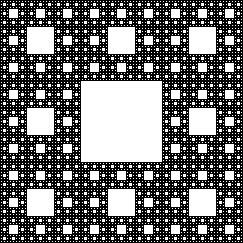
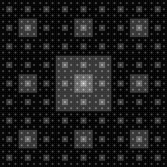
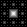
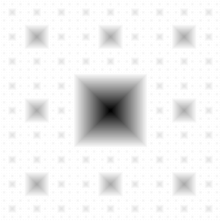
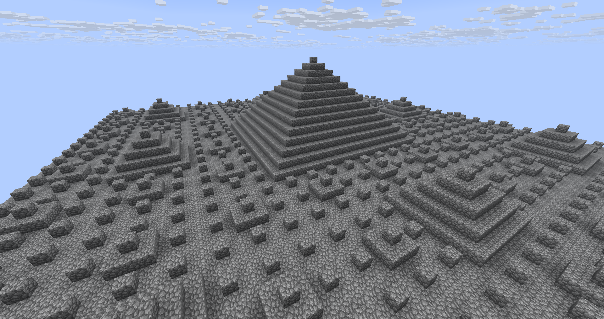
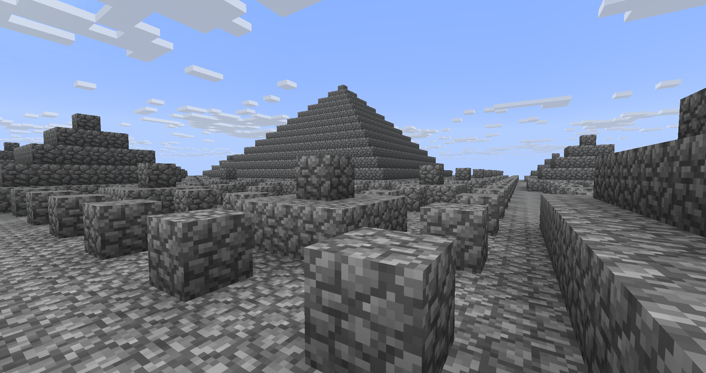

Basic Sierpinski Carpet

The
Sierpinski Carpet is a fractal formed by taking the center out of a square a bunch of times.
Bitwise Sierpinski Carpet

NOTE: I did not discover this. I first learned about this approximation of the Sierpinski Carpet from a really cool website called icefractal.com. Specifically, from the
3D Explorer on there.
The rest of these fractals I have discovered, I just got inspired by this to make the later ones.
Integer division
all of these compute one iteration and then combine that with the previous ones
f(x, y) =
(((x % 3) & 1) & ((y % 3) & 1))
+ (((x / 3 % 3) & 1) & (y / 3 % 3) & 1))
+ (((x / 9 % 3) & 1) & (y / 9 % 3) & 1))
+ (((x / 27 % 3) & 1) & (y / 27 % 3) & 1))
...
+ (((x / 3i % 3) & 1) & (y / 3i % 3) & 1))
To normalize the result, divide the output by the number of iterations.
Something something... bitwise OR will just get you the Sierpinski Carpet without any of the extra details.
Sierpinski Wave
Chebyshev-Sierpinski Pyramids


The rightside image has been inverted so that it's easier to make out fine details.
f(x, y) =
max(
min(if x % 3 > 1 then 3 - x % 3 - 1 else x % 3, if y % 3 > 1 then 3 - y % 3 - 1 else y % 3),
min(if x % 9 > 4 then 9 - x % 9 - 3 else x % 9 - 2, if y % 9 > 4 then 9 - y % 9 - 3 else y % 9 - 2),
min(if x % 27 > 13 then 27 - x % 27 - 9 else x % 27 - 8, if y % 27 > 13 then 27 - y % 27 - 9 else y % 27 - 8),
min(if x % 81 > 40 then 81 - x % 81 - 27 else x % 81 - 26, if y % 81 > 40 then 81 - y % 81 - 27 else y % 81 - 26),
...
)
I tried use abs() for this instead of if-then-else, but it didn't work (tips were 2 pixels wide instead of 1). There's probably a simpler way to implement this that I haven't discovered yet.
Let i = the current iteration, let n = 3i
f(x, y) =
min(if x % n > n / 2 then n - x % n - 3i-1 else x % n - 3i-1 + 1, if y % n > n / 2 then n - y % n - 3i-1 else y % n - 3i-1 + 1)


I don't know of any 3D graphing software (other than the stuff on Ice Fractal) and I didn't think to use Blender, so here's a graph of this fractal in Minecraft. The brightness of the pictures corresponds to height of each block.
Manhattan-Sierpinski Pyramids
Euclid-Sierpinski Cones